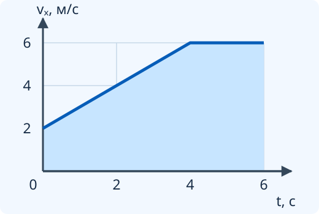

Подготовка к контрольной работе по теме «Механическое движение. Взаимодействие тел»
В задачах о механическом движении мы отвечаем на два разных вопроса: как движется тело и почему его движение изменяется. На первый отвечают координата, скорость, ускорение и время. На второй — взаимодействия тел и действующие силы. При подготовке важно научиться связывать эти описания, а не только вспоминать отдельные формулы.
С чего начинать любую задачу
Сначала выберите тело, движение или равновесие которого изучаете. Укажите систему отсчёта и направление оси. Запишите известные величины и переведите их в СИ: минуты — в секунды, граммы — в килограммы, сантиметры — в метры.
Например, \(54\text{ км/ч}=15\text{ м/с}\), а \(3\text{ см}=0{,}03\text{ м}\). Числа в формуле должны быть согласованы с единицами.
После расчёта запишите единицы ответа и проверьте его смысл: может ли путь быть отрицательным, должно ли тормозящее тело ускоряться вперёд, что произойдёт при увеличении массы или расстояния?
1. Движение: путь, перемещение, скорость
Материальная точка — модель тела, размерами которого можно пренебречь в данной задаче. При изучении движения автомобиля между городами она часто подходит, а при разборе его поворота или движения колёс — уже недостаточна.
Систему отсчёта составляют тело отсчёта, связанная с ним система координат и часы. Движение относительно: пассажир может покоиться относительно вагона и одновременно двигаться относительно платформы. Прежде чем сравнивать скорости, уточните, относительно чего они заданы.
Путь — длина траектории, он неотрицателен. Перемещение соединяет начальное положение тела с конечным; его проекция на ось может быть положительной, отрицательной или нулевой.
Если человек прошёл 100 м вперёд и вернулся в исходную точку, путь составил 200 м, а перемещение равно нулю. Поэтому путь и модуль перемещения не всегда совпадают.
Средняя путевая скорость:
В полное время включают остановки, если они входят в рассматриваемое путешествие. Средняя путевая скорость не обязана совпадать со средним арифметическим скоростей на участках.
При равномерном прямолинейном движении:
Здесь \(v_x\) — проекция скорости на выбранную ось. Путь при таком движении равен \(s=|v_x|t\).
2. Равноускоренное движение и графики
При постоянном ускорении:
Начало отсчёта времени в этих формулах выбрано при \(t=0\). Последняя формула даёт проекцию перемещения. Если тело за время движения меняет направление, для нахождения пути нужно отдельно рассмотреть участки до и после разворота.
На графике \(v_x(t)\) наклон прямого участка показывает ускорение. Площадь между графиком и осью времени с учётом знака даёт проекцию перемещения: участок выше оси даёт положительный вклад, ниже оси — отрицательный. Для пути складывают модули этих вкладов.

Пример чтения графика
Два участка движения
По изображённому графику тело первые 4 с движется с постоянным ускорением, затем 2 с — равномерно. Все значения \(v_x\) положительны, поэтому путь равен проекции перемещения.
На первом участке:
На втором участке:
Итого \(s=28\text{ м}\). Средняя путевая скорость за 6 с:
3. Законы Ньютона: от взаимодействия к ускорению
В инерциальной системе отсчёта тело сохраняет покой или равномерное прямолинейное движение, если равнодействующая сил равна нулю. Для обычных школьных задач систему, связанную с поверхностью Земли, приближённо считаем инерциальной.
Второй закон Ньютона:
Слева складываются все силы, действующие на выбранное тело. Для движения вдоль оси удобно записывать проекции, например \(F_x=ma_x\). Направление ускорения совпадает с направлением равнодействующей, а не обязательно со скоростью.
По третьему закону Ньютона два тела действуют друг на друга с равными по величине и противоположно направленными силами. Эти силы приложены к разным телам. Их нельзя взаимно сократить при записи уравнения движения одного из тел.
4. Сила тяжести, упругость и трение
| Взаимодействие | Расчётная зависимость | Условия и направление |
|---|---|---|
| Притяжение у поверхности Земли | \(F_{\text{тяж}}=mg\) | Направлено к Земле; \(g\) вблизи поверхности приближённо постоянно |
| Деформация пружины | \(F_{\text{упр}}=k\Delta l\) | В области действия закона Гука; сила стремится восстановить исходную длину |
| Трение скольжения | \(F_{\text{тр}}=\mu N\) | В школьной модели сухого скольжения; против движения относительно поверхности |
| Трение покоя | \(F_{\text{тр.пок}}\leq\mu_{\text{пок}}N\) | Подстраивается под условия, пока скольжение не началось; против возможного относительного скольжения |
В законе Гука \(\Delta l\) — величина изменения длины, а не полная длина пружины. Жёсткость выражают в Н/м, деформацию — в метрах.
В формулах трения \(N\) — величина силы нормальной реакции опоры. Она равна \(mg\) только при подходящих условиях: например, на горизонтальной опоре без вертикального ускорения и без других вертикальных сил. При наклонной тяге или движении лифта это равенство нужно проверять заново.
Пример на движение с трением
Сначала силы, затем ускорение
Брусок массой 4 кг скользит вправо по горизонтальному столу. Его тянут горизонтальной силой 14 Н вправо. Коэффициент трения скольжения равен 0,20. Примем \(g=10\text{ Н/кг}\), сопротивлением воздуха пренебрежём.
По вертикали ускорения нет, поэтому \(N=mg=40\text{ Н}\). Трение направлено влево:
Выберем ось вправо. Равнодействующая по этой оси:
Ускорение направлено вправо. Делить на массу только силу тяги было бы ошибкой: на движение влияет и трение.
5. Свободное падение, движение по окружности и тяготение
Свободное падение — движение только под действием силы тяжести. Если сопротивлением воздуха можно пренебречь, а высота мала по сравнению с радиусом Земли, ускорение \(\vec a=\vec g\) приближённо постоянно и направлено вниз. Для тела, отпущенного без начальной скорости, при оси вниз и времени, отсчитываемом от отпускания:
Здесь \(h\) — пройденное вниз расстояние до удара о препятствие. Для броска с ненулевой начальной скоростью нужно использовать общие уравнения равноускоренного движения и учитывать знак начальной проекции скорости.
При равномерном движении по окружности модуль скорости постоянен, но её направление меняется. Поэтому ускорение не равно нулю: оно направлено к центру окружности.
Здесь \(n\) — число оборотов, \(T\) — период, \(\nu\) — частота, \(R\) — радиус траектории. Угловая скорость связана с ними соотношениями \(\omega=2\pi/T\) и \(v=\omega R\).
Центростремительная сила — не дополнительное взаимодействие. Это название равнодействующей, направленной к центру. Её могут создавать натяжение нити, трение, тяготение или несколько сил вместе.
Закон всемирного тяготения для материальных точек и сферически симметричных тел вне их поверхности:
Величина \(r\) — расстояние между центрами, а не высота над поверхностью. На высоте \(h\) над сферической планетой радиусом \(R\):
При увеличении расстояния между центрами вдвое сила притяжения уменьшается в четыре раза. Для круговой орбиты у поверхности идеализированной планеты первая космическая скорость равна \(v_1=\sqrt{GM/R}=\sqrt{gR}\); сопротивление атмосферы в такой модели не учитывается.
Вес тела — сила, с которой оно действует на опору или подвес. Это не сила тяжести: они приложены к разным телам. Для тела, покоящегося на горизонтальной опоре без других вертикальных сил, \(P=mg\). При свободном падении тела вместе с опорой вес равен нулю, хотя притяжение Земли сохраняется. Это состояние невесомости.
Если лифт ускоряется вверх, при тех же условиях модуль веса \(P=m(g+a)\) и возникает перегрузка. Важен знак ускорения, а не только направление движения лифта.
6. Равновесие, момент силы и центр тяжести
Для равновесия материальной точки равнодействующая сил должна равняться нулю. Если тело может поворачиваться, нужно дополнительно учитывать моменты сил.
Модуль момента силы относительно выбранной оси:
Плечо силы \(l\) — кратчайшее, перпендикулярное расстояние от оси вращения до линии действия силы. Оно не всегда равно расстоянию до точки приложения. Единица момента — Н·м.
Центр тяжести позволяет представить действие силы тяжести на тело одной силой. Если вертикальная проекция центра тяжести находится внутри площади опоры, это обычно обеспечивает устойчивость к малым отклонениям при действии одной только тяжести и реакции опоры; у границы опоры запас устойчивости уменьшается. При наличии дополнительных сил нужно рассматривать их моменты.
Пример на рычаг
Уравновешивание моментов
Невесомый рычаг удерживается на неподвижной оси. Слева на расстоянии 30 см от оси вниз действует сила 12 Н, справа на расстоянии 20 см вниз действует неизвестная сила. Рычаг горизонтален, обе силы перпендикулярны ему. Найдём силу справа для равновесия.
Ось опоры выберем осью моментов. Реакция опоры относительно неё момента не создаёт. Две указанные силы поворачивают рычаг в разные стороны:
На меньшем плече требуется большая сила. Кроме равенства моментов, выполняется равновесие вертикальных сил: опора действует на рычаг вверх и компенсирует действие двух направленных вниз сил.
Что проверить перед ответом
Самостоятельная подготовка
Здесь приведены тренировочные задания для повторения материала. Состав будущей контрольной из них не следует. Если требуется, принимайте \(g=10\text{ м/с}^2\). В расчётных задачах записывайте модель, формулу, подстановку и ответ с единицами. Решения и ответы составьте самостоятельно.
- Человек прошёл 120 м за 80 с, остановился на 40 с, затем вернулся в исходную точку за 120 с. Найдите путь, перемещение и среднюю путевую скорость за всё время.
- Велосипедист движется вдоль положительного направления оси. За 5 с его скорость равномерно уменьшилась с 8 до 3 м/с. Найдите проекцию ускорения и путь; постройте график проекции скорости.
- Даны проекции \(v_x=-4\text{ м/с}\) и \(a_x=-2\text{ м/с}^2\). Объясните, увеличивается или уменьшается модуль скорости. Найдите проекцию скорости через 3 с при постоянном ускорении.
- Брусок массой 3 кг скользит вправо по горизонтальному столу. Его тянут горизонтальной силой 12 Н вправо, коэффициент трения скольжения 0,20. Изобразите силы, найдите реакцию опоры, трение и ускорение. Воздухом пренебрегите.
- Ненагруженная пружина имеет длину 15 см. При растяжении до 19 см сила упругости равна 6 Н. Найдите жёсткость и силу при длине 17 см, считая, что закон Гука выполняется.
- Тело совершило 20 оборотов по окружности радиусом 0,50 м за 40 с. Движение равномерное. Найдите период, частоту, скорость и центростремительное ускорение.
- Спутник переместили с высоты \(h=R\) на высоту \(h=3R\) над сферической планетой радиусом \(R\). Масса спутника не меняется. Во сколько раз изменилась сила притяжения? Сначала выразите оба расстояния между центрами.
- Невесомый горизонтальный рычаг удерживается на оси. Слева вниз действует сила 8 Н на расстоянии 0,45 м от оси, справа вниз — сила 12 Н. На каком расстоянии справа нужно приложить силу для равновесия? Обе силы перпендикулярны рычагу.
- Книга покоится на столе. Назовите силы, действующие на книгу, и отдельно — силу, с которой книга действует на стол. Какие из этих сил образуют пару по третьему закону Ньютона?
- В кабине свободно падающего космического аппарата небольшой предмет отпустили без толчка. Объясните, почему он может оставаться рядом с человеком, хотя Земля продолжает притягивать и аппарат, и предмет.
Итог подготовки
Убедитесь, что вы умеете выбирать тело и оси, различать путь и перемещение, читать график скорости, складывать силы по направлениям и правильно находить плечо. Если в какой-то задаче непонятно, какую формулу выбрать, вернитесь к описанию процесса и рисунку: они определяют уравнение.
Домашнее задание по тематическому плану: §1–23.